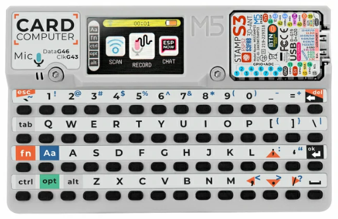
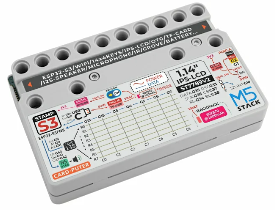

M5Stack Cardputer

M5Stack Cardputer
The M5Stack Cardputer is a pocket-sized computer kit built around an M5Stamp S3 module (ESP32-S3FN8, dual Xtensa LX7 @ 240 MHz, 8 MB flash, no PSRAM). It integrates a 56-key keyboard, a 1.14” ST7789 TFT, an NS4168 I2S speaker, an SPM1423 microphone, an IR transmitter, a microSD slot and a Grove port.

M5Stack Cardputer
Features
ESP32-S3FN8 (dual Xtensa LX7 @ 240 MHz), 8 MB flash, no PSRAM
Wi-Fi 4 (2.4 GHz) and Bluetooth LE (native ESP32-S3 radio)
56-key keyboard (8x7 matrix behind a 74HC138 demultiplexer)
1.14” 240x135 ST7789v2 TFT on SPI2
NS4168 mono I2S Class-D speaker amplifier
SPM1423 PDM microphone
IR transmitter, addressable RGB LED (WS2812)
microSD card slot (SPI) and Grove HY2.0-4P (I2C)
USB Type-C (native USB-Serial-JTAG)
Serial Console
By default the NSH console runs over the USB-Serial-JTAG peripheral exposed
on the USB Type-C connector. It enumerates on the host as /dev/ttyACM0
(Linux). No external USB-to-UART bridge is required.
Keyboard
The 56-key keyboard is an 8x7 matrix driven by a 74HC138 3-to-8 demultiplexer:
three select lines (GPIO8/9/11) choose one of eight rows and seven column lines
(GPIO13/15/3/4/5/6/7) are read back. The esp32s3_kbd.c driver scans the
matrix on the low-priority work queue and registers a keyboard device at
/dev/kbd0, reporting ASCII key codes with SHIFT/CTRL handling. Enable it
with CONFIG_ESP32S3_M5_CARDPUTER_KEYBOARD (the lvglterm configuration
turns it on).
Note
The key-position-to-character table follows the M5Cardputer layout; verify
it against the printed legends on first bring-up. Applications read
/dev/kbd0 for key events (for example the lvglterm example, built
with its matrix-keyboard input variant, feeds it into an on-screen
shell).
Pin Mapping
Peripheral |
ESP32-S3 GPIO |
|---|---|
Keyboard demux select |
8 (A0), 9 (A1), 11 (A2) |
Keyboard columns |
13, 15, 3, 4, 5, 6, 7 |
ST7789 SPI2 SCLK/MOSI/CS |
36 / 35 / 37 |
ST7789 DC/RST/backlight |
34 / 33 / 38 |
microSD SPI3 SCK/MISO |
40 / 39 |
microSD SPI3 MOSI/CS |
14 / 12 |
Speaker NS4168 BCK/WS/DOUT |
41 / 43 / 42 |
Microphone SPM1423 DATA/CLK |
46 / 43 (CLK shared with speaker WS) |
IR transmitter |
44 |
RGB LED (WS2812) |
21 |
Grove I2C SDA/SCL |
2 / 1 |
Battery ADC (1:2 divider) |
10 |
USB D-/D+ (native) |
19 / 20 |
BOOT / user button |
0 |
Configurations
All configurations use the USB-Serial-JTAG console and can be selected with:
./tools/configure.sh esp32s3-m5-cardputer:<config>
- nsh
Basic NuttShell over USB-Serial-JTAG. Open the console (
/dev/ttyACM0) and interact with the shell:nsh> help nsh> ls /dev
- sdcard
NSH plus the microSD card on SPI3 (FAT), registered as
/dev/mmcsd0. Mount it and access the files:nsh> mount -t vfat /dev/mmcsd0 /mnt nsh> ls /mnt nsh> echo "hello" > /mnt/test.txt
- fb
ST7789 display exposed as a framebuffer (
/dev/fb0). Run the framebuffer example to draw test patterns on the screen:nsh> fb
- wifi
Wi-Fi station. Associate with an access point and obtain an address over DHCP (replace
<ssid>/<passphrase>with your network):nsh> wapi psk wlan0 <passphrase> 3 nsh> wapi essid wlan0 <ssid> 1 nsh> renew wlan0 nsh> ifconfig nsh> ping 8.8.8.8
- softap
Wi-Fi SoftAP with a DHCP server. The board starts the access point
NuttX(WPA2/WPA3-SAE, passphrasenuttx12345) at 10.0.0.1. Start the DHCP server so stations that join get an address:nsh> ifconfig nsh> dhcpd wlan0
Then connect a client to the
NuttXnetwork; it receives an address in the 10.0.0.0/24 range and can reach the board at 10.0.0.1.- lvgl
Graphics support with LVGL on the ST7789 display. Run the LVGL demo:
nsh> lvgldemo
- lvglterm
On-screen NuttShell terminal with LVGL and the physical keyboard. Runs the
lvgltermexample built with its matrix-keyboard input variant: NSH output is rendered in an LVGL text area and the keyboard (/dev/kbd0) feeds the input. Wi-Fi is included, so the on-screen shell can associate with an access point usingwapi.Fn+;/.scroll the output:nsh> lvglterm